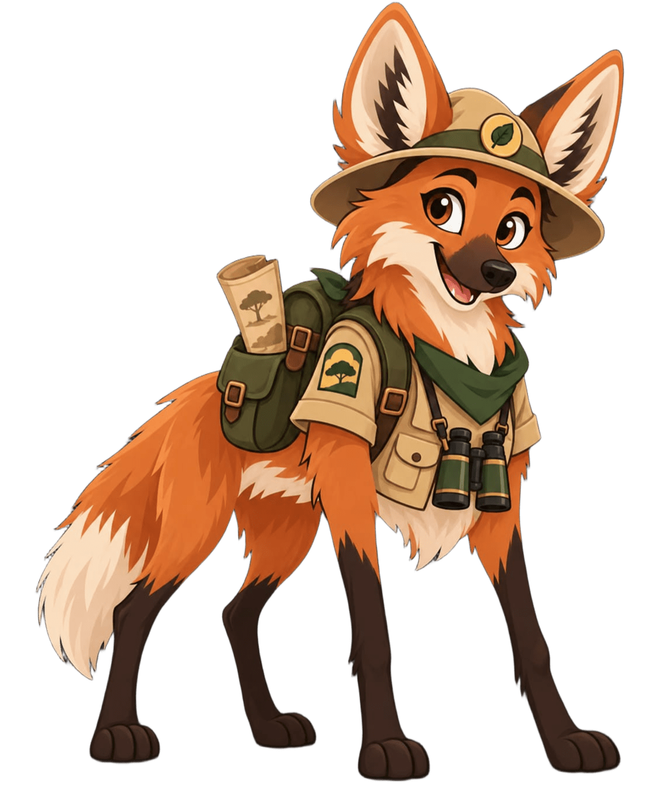

Experiência
0 XP
BIBLIOTECA DO EXPLORADOR
Conhecimento para proteger o Cerrado
Biblioteca do Cerrado
Descubra animais, plantas, paisagens e histórias que revelam a riqueza de um dos biomas mais importantes do Brasil.

Explore
50 artigos disponíveis
SEU REGISTRO
Progresso de leitura
Jornada do Guardião
Nível atual
Bronze
Concluídos
0 artigos
Sequência
0 dias
ARQUIVO DE CAMPO
Artigos disponíveis
Escolha uma trilha de conhecimento e comece a explorar.
Carregando artigos...